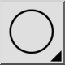
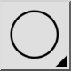

2 points et rayon
Barre d'outil / icône :


Menu : Dessin > Cercle > 2 points et rayon
Raccourci : C, D
Commandes : circleradius | cd
Ceci est une traduction automatique.
Barre d'outil / icône :


Menu : Dessin > Cercle > 2 points et rayon
Raccourci : C, D
Commandes : circleradius | cd
Dessine un cercle à partir de deux points sur la ligne du cercle et d'un rayon.